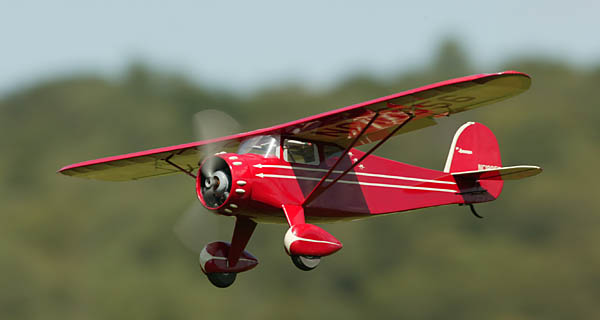
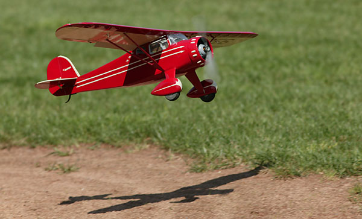
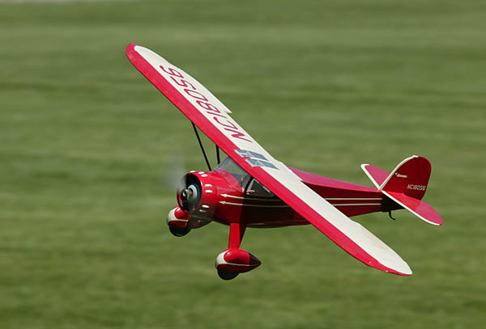
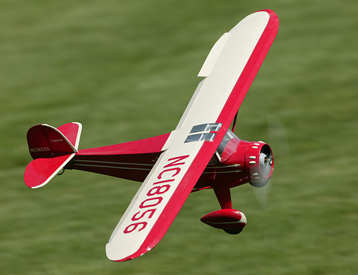

Park Scale Models Monocoupe 90a |
|---|
| Posted 10/16/07, revised 2/25/08 |
|  |
|
This is an infectious little flyer. Originally designed by Zeke Brubaker as a very light 3-channel flyer for rudder, elevator and throttle with a GWS IPS drive, it is also now available from Zeke's company, Park Scale Models, configured for ailerons, optional flaps and small brushless motors. I got to fly two different versions at the 2006 NEAT Fair built by Paul Dixon and Chris Parent, and immediately knew that I had to have one of my own. Chris Parent had set his up with ailerons and flaps and I found the extra lift and drag fun to play with. No, the flaps are definitely not needed, but they add a little something extra, and I decided to do the same with mine. |
|  |
| Naturally I had to make a few changes, but nothing to change the character of the kit. The biggest construction change I made was to move the rudder and elevator servos from right behind the instrument panel in the cockpit area down into the battery compartment. I also built up the cowl and wheel pants out of balsa. The vacuum form parts were fine, but I wanted to color match the covering on the fuselage as accurately as possible. Using more covering seemed like the easiest way to do that. |
|  |
| Since my favorite time to fly small light models is right around sunset, I also added a lighting system. Nothing fancy, just red, green and white LEDs on the wing tips and fin to simulate the navigation lights that might be on a full scale version. I toggle the lights on and off with the retract switch driving a small Astro Flight FireFly brushed speed control from full off to full on. I also programmed my Spektrum DX-7 transmitter to give a slight elevator offset with flaps to minimize pitch changes. |
| The Monocoupe is a delightful flyer, easily taking off from a smooth surface or short grass. After ensuring the wheels turned freely in the wheel pants, it is perfect for flogging the circuit, shooting touch and goes until the battery signals a need to refuel. A 2S 640 or 700mAh pack will give me a solid 15 minutes of play, so I can't see any compelling reason to add more weight with a larger pack. I do need to be attentive to the timer when flying after sunset though, as the Astro controller will cut out before the Jeti, plunging the model into darkness. |
|  |
| For more on this lovely little flivver, be sure to visit Park Scale Models and the RC Groups discussion thread featuring this model. |
| Monocoupe Stats | |
| Wingspan: | 36 inches |
| Length: | 22 inches |
| Wing Area: | 190 square inches |
| Flying Weight: | 10.4 ounces |
| Wing Loading: | 7.88 ounces per square foot |
| Motor: | AXI 2204/54 outrunner |
| Speed Control: | Jeti Advance Plus 8-amp ESC |
| Propeller : | APC 8x3.8 SF propeller |
| Battery: | 2S, 300-800mAh Li-Poly |
| Radio: | Spektrum DX-7 with Spektrum AR6100 |
| Servos: | (5x) FMA PS-10 |
|
The lineup at the NEAT Fair 2007. My model is bracketed by Paul Dixon's model at left and Chris Parent's at right. | |
AwardsWRAM Show 2008 |
|---|
Copyright 2008-2020, Thayer Syme. All rights reserved